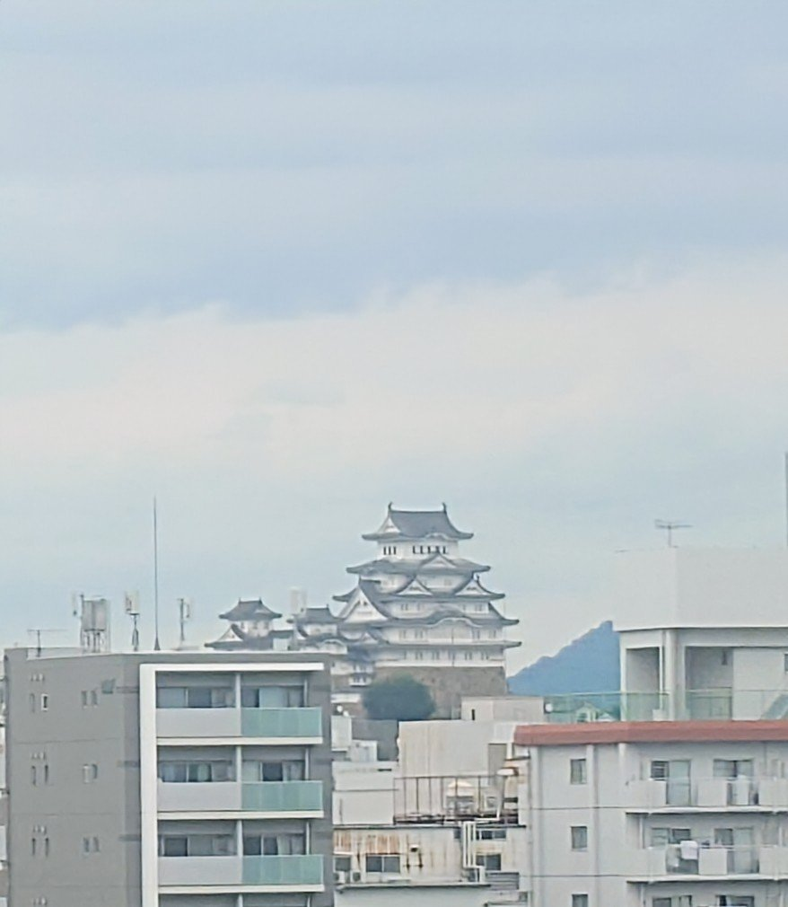

- Lato del posto
- Finestrini rivolti a nordPosto E sui treni a 16 carrozze. Su quelli a 8 carrozze: posto D nelle file 2+2, posto E nelle file 3+2.
- Dove guardare
- Intorno alla stazione di Himeji
LA STORIA
Un castello giapponese originale, ancora in piedi
Himeji è uno dei dodici castelli giapponesi con il mastio principale originale, la torre centrale di una fortezza dei samurai. Il mastio in legno risale al 1609 e non è una ricostruzione moderna. Le pareti intonacate di bianco gli valsero il soprannome di castello dell’Airone bianco, l’elegante uccello. Dal treno si vede solo una sagoma lontana: sapere quanta parte del castello antico sopravvive dà un significato diverso a quello scorcio.
La sua storia iniziò prima della torre bianca. Nel 1580 il signore locale Kuroda Kanbei cedette il castello a Toyotomi Hideyoshi, il condottiero che avrebbe poi unificato il Giappone. Hideyoshi ne fece una base per le campagne nel Giappone occidentale e costruì un precedente mastio a tre ordini. La torre delle fotografie odierne arrivò più tardi.
Dopo la decisiva battaglia del 1600 che contribuì ad affermare il dominio Tokugawa, il signore samurai Ikeda Terumasa assunse il controllo della regione. Ricostruì Himeji su scala maggiore, completando il mastio attuale nel 1609. Tre masti più piccoli vi sono collegati da passaggi coperti. Era un centro fortificato del potere, oltre che un profilo imponente nel paesaggio.
C’è anche una storia familiare. La principessa Sen, figlia dello shogun, il governante militare del Giappone, perse il primo marito nell’assedio di Osaka. Sposò poi Honda Tadatoki e si trasferì a Himeji nel 1617, quando suo padre divenne signore del castello. Per la coppia fu preparato il recinto occidentale, detto Nishi-no-maru. Dietro le mura difensive c’era un luogo da cui ricominciare.
Anche un castello originale richiede cure. Tra il 1956 e il 1964 un grande restauro smontò il mastio, lo riparò e lo rimontò. Ulteriori interventi di conservazione portarono alla riapertura nel 2015. Ciò che sembra senza tempo è sopravvissuto grazie alla manutenzione continua.
L’UNESCO riconobbe Himeji nel 1993, nel primo gruppo di siti giapponesi iscritti al Patrimonio mondiale. Il valore va oltre la torre bianca: porte, mura, torri minori e fossati conservano l’impianto di una fortezza giapponese del primo Seicento. Anche proseguendo verso ovest senza fermarti, quel gruppo di tetti è un piccolo incontro con il mondo dei samurai.
CHE COSA VEDERE
Trovarlo dal finestrino
Guarda dal lato nord nei pressi della stazione di Himeji: finestrini a destra verso ovest, a sinistra verso est. Cerca una sagoma bianca con diversi tetti sovrapposti sopra la città.
Circa 1,5 km di città separano i binari dal mastio. Gli edifici interrompono la vista e la fotografia ravvicinata fa sembrare il castello molto più grande che a occhio nudo. Usa la veduta ampia per collocarlo tra i tetti e inizia a guardare prima della stazione.
CONSIGLI FOTOGRAFICI
Osserva prima il panorama, poi ingrandisci
Parti da una veduta ampia dei tetti e cerca un gruppo di tetti bianchi più in alto. Alterna la foto panoramica e il dettaglio con teleobiettivo per capire sia le dimensioni del castello nella città sia la forma del mastio.
Per fotografarlo, attendere con un’inquadratura moderatamente ampia può aiutare a seguirlo più che stringere subito lo zoom. Continua a guardare quando gli edifici in primo piano interrompono la vista e controlla i riflessi sul vetro, restando comodamente seduto.
SULLA MAPPA
Il castello e la ferrovia
Il punto di osservazione dal treno è indicativo lungo la ferrovia: non coincide necessariamente con il luogo esatto di ogni fotografia né delimita l’area di visibilità.
Apri in Google Maps ↗Per approfondire
- Comune di Himeji: storia del castello (in giapponese)
- Museo di storia della prefettura di Hyogo: cronologia di Himeji (in giapponese)
- Comune di Himeji: perché il castello è Patrimonio mondiale (in giapponese)
- JNTO: guida di viaggio al castello di Himeji (in inglese)
- Guida turistica del Comune di Himeji (in inglese)